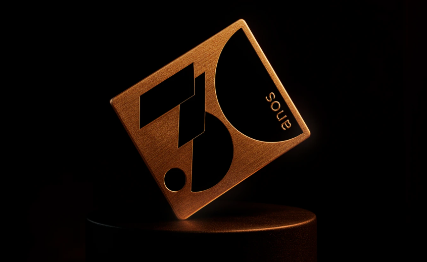
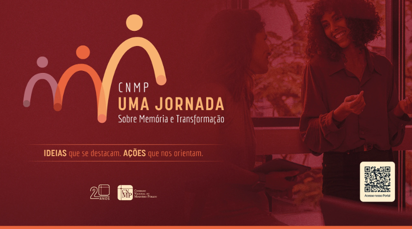
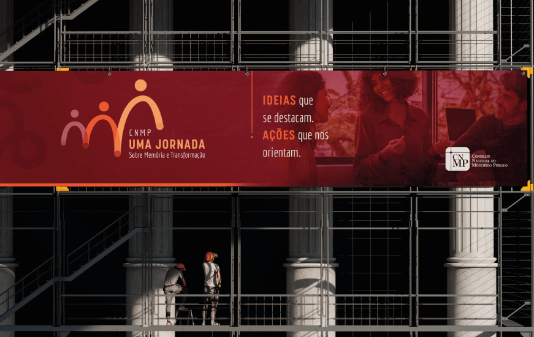
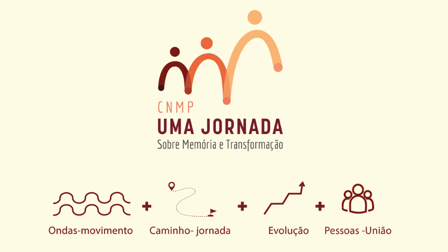

DESIGNER PLENO · DIREÇÃO DE ARTE
Ivan Reis
Design, direção de arte e comunicação visual para transformar ideias em soluções claras e relevantes.
Mais de 7 anos de experiência em órgãos públicos, agências, produtoras, canais de educação e marketplaces, com atuação em identidade visual, campanhas, motion e comunicação institucional.
Fale comigo
Sou Ivan, Designer Pleno com mais de 7 anos de experiência, com atuação em órgãos públicos, agências, produtoras, canais de educação e marketplaces. Ao longo da minha trajetória, desenvolvi soluções visuais para diferentes contextos e públicos, sempre buscando equilibrar clareza, consistência e resultado.
Tenho domínio do Pacote Adobe e experiência em vídeo e motion design, especialmente com After Effects e Premiere. Gosto de transformar demandas complexas em soluções visuais claras, trabalhar em diferentes formatos e colaborar com equipes para tirar boas ideias do papel.
Comunicação visual institucional, materiais para eventos das câmaras temáticas do CNMP, editoração e diagramação de publicações.
Consolidação da identidade visual da empresa, criação do selo de 30 anos e branding book completo.
Redesign do site institucional, peças para redes sociais e diagramação do Código de Ética.
Projetos selecionados
Uma seleção de trabalhos em identidade visual, direção de arte, comunicação e motion design.



Criação do selo comemorativo de 30 anos e consolidação da identidade visual da empresa, transformando um logotipo isolado em um sistema visual mais consistente e aplicável a diferentes pontos de contato.
Ver no Behance ↗


Desenvolvimento de identidade visual para comunicação institucional no Ministério Público, buscando unidade visual, reconhecimento e clareza em diferentes canais e formatos.
Ver no Behance ↗


Edição e criação de peças de motion design para comunicação do sistema de transporte, combinando ritmo, informação e consistência visual.
Ver no Behance ↗


Criação de peças para a Brasília Design Week, explorando linguagem visual, composição e aplicações para diferentes formatos do evento.
Ver no Behance ↗


Criação de vinhetas e peças de motion para a comunicação audiovisual do festival, trabalhando movimento, ritmo e identidade.
Ver no Behance ↗
Grupo Exemplus — selo de 30 anos
Contribuí para a consolidação da identidade visual da empresa, transformando um logotipo isolado em uma identidade completa e consistente, com um branding book que orienta toda a comunicação online e offline. Criei o selo comemorativo de 30 anos, aplicado em diversos canais como assinatura de e-mail, materiais impressos, redes sociais e capas de plataformas digitais, fortalecendo a presença da marca.
Ver trabalho completo no Behance ↗Ouvidoria do CNMP — identidade visual
Desenvolvimento de identidade visual como parte do trabalho de comunicação institucional no Ministério Público, contribuindo para o fortalecimento da comunicação institucional por meio do design e garantindo unidade estética e clareza informativa em diferentes canais e formatos.
Ver trabalho completo no Behance ↗
Sistema de Transporte — edições e motion
Edição e peças de motion design para a comunicação visual do sistema de transporte, com foco em clareza informativa e consistência de identidade nos diferentes pontos de contato com o usuário.
Ver trabalho completo no Behance ↗
Brasília Design Week — artes
Criação de artes para a Brasília Design Week, aplicadas em peças digitais e impressas ao longo do evento, reforçando a identidade visual da edição.
Ver trabalho completo no Behance ↗
Festival de Cinema — motions
Criação de vinhetas e peças de motion para a identidade audiovisual do festival de cinema.
Ver trabalho completo no Behance ↗


Veertien
Descrição do projeto Veertien — o que foi feito e qual o contexto.
Ver trabalho completo no Behance ↗